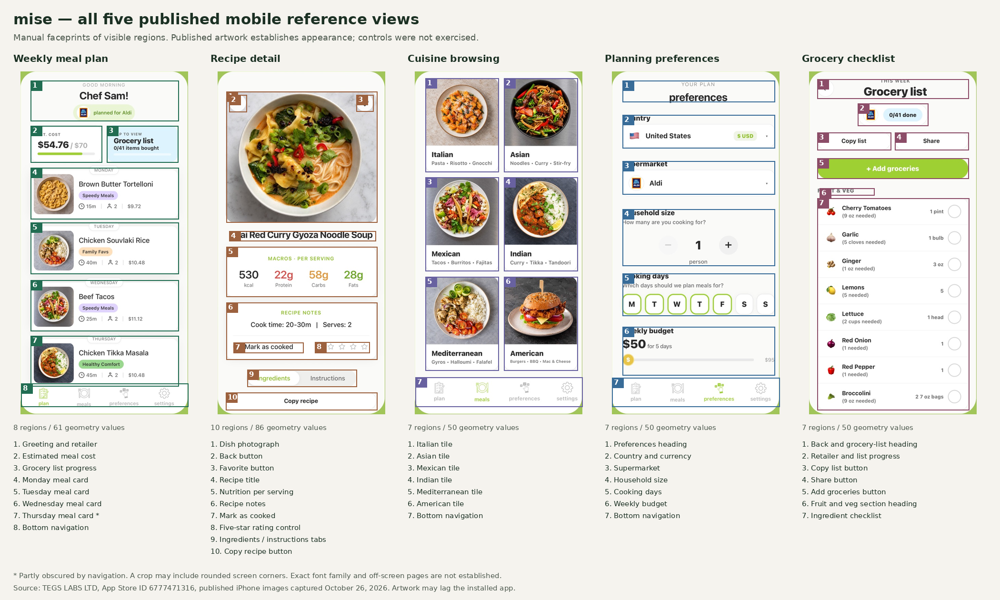

Mise, faceprinted.
Five published mobile views, 39 measured regions. The map preserves the visible structure of meal planning, recipe detail, cuisine browsing, household preferences and groceries, then maps those functions into PantryShop’s restaurant-menu experience.

These are measurements of published App Store artwork, not recordings of exercised app behavior. Promotional borders were excluded manually. Hidden views and complete feature parity have not been established. The accompanying JSON contains source URLs, crop coordinates, normalized geometry and visual hashes.